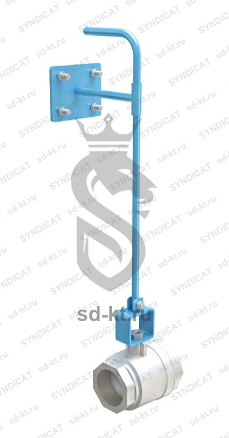

Кран шаровый фланцевый Ду 50 с удлиненным штоком
Артикул: 0562
Производственное объединение "ПНСК"
Раздел: Запорная арматура · АЗС
| Диаметр условного прохода DN (ДУ) | 50 |
Цена и наличие — по запросу. Поставляем оригинал и аналоги. Доставка по России.
Модификации и размеры (2)
- Кран шаровый фланцевый Ду 50 с удлиненным штоком · арт. 0562
- Кран шаровый фланцевый Ду 40 с удлиненным штоком · арт. 0581
Подберём нужный вариант — уточните при запросе.
Описание
Кран шаровый фланцевый Ду 50 с удлиненным штоком производства Производственное объединение "ПНСК" — позиция из раздела «Запорная арматура» для АЗС. Компания SYNDICAT поставляет оборудование и комплектующие для автозаправочных и газозаправочных станций по всей России. Цена и наличие «Кран шаровый фланцевый Ду 50 с удлиненным штоком» — по запросу: оставьте заявку или позвоните, подберём оригинал или аналог и рассчитаем доставку.